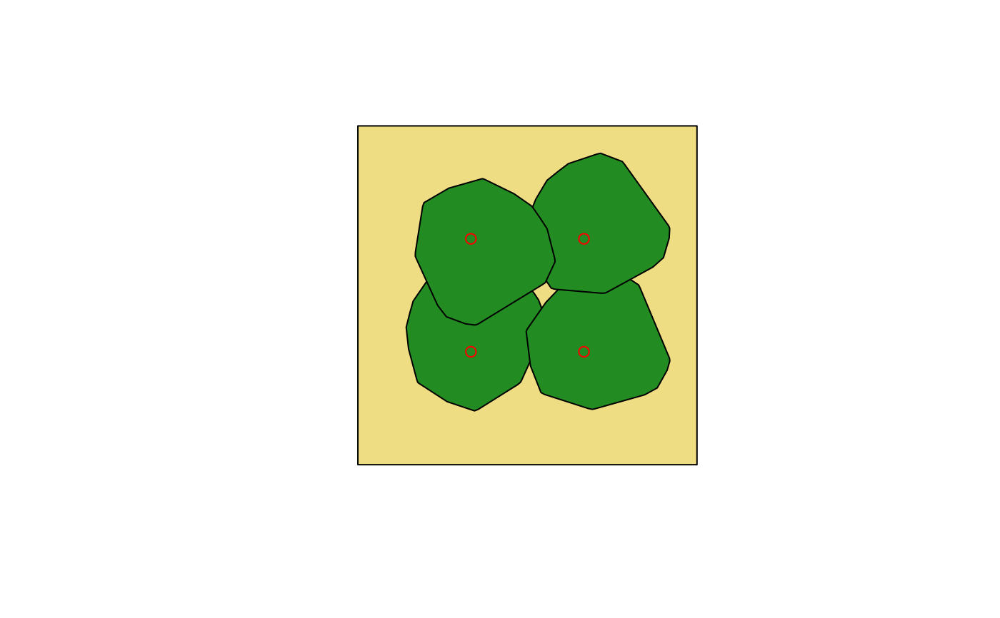

Create an artificial forest stand of a given area using tree point clouds.
artificial_stand( files, n.trees, dimension, coordinates = NULL, sample = TRUE, replace = TRUE, overlap = NULL, rotation = TRUE, degrees = NULL, n_attempts = 100, progress = TRUE, plot = TRUE, ... )
Arguments
| files | A |
|---|---|
| n.trees | A positive |
| dimension | A positive |
| coordinates | A |
| sample | Logical. If |
| replace | Logical. If |
| overlap | A positive |
| rotation | Logical. If |
| degrees | A positive |
| n_attempts | A positive |
| progress | Logical, if |
| plot | Logical. If |
| ... | Parameters passed to |
Value
A list which contain a data.table (Trees) with the information of the point clouds used and their current coordinates in the stand, and another data.table with that compile all the point clouds used.
Details
When coordinates = NULL, artifical_stand adds, in sequence,
random coordinates to each files in the future stand based on the
crown area overlap. That is, first a tree from files is
randomly located within the stand dimention, then a second tree from
files will be located in the future stand based on the crown area
overlap from the previous tree, and so on. If during the random
location a given tree does not meet the requirements of overlap, new
random coordinates will be provided until the requirements are met.
Since artificial_stand will try to add tree to the stand until the
requirements are met, this could lead to an infinite loop if the stand
dimention is small or if the trees on files are large or many
n.trees. Therefore, the use of n_attempts is recommended to avoid
this scenario.
See also
Author
J. Antonio Guzmán Q.
Examples
#' #Import an example point cloud path <- system.file("extdata", "pc_tree.txt", package = "rTLS") #Creates a stand of 4 trees with 10% of overlap files <- rep(path, 4) artificial_stand(files, n.trees = 4, dimension = c(15, 15), overlap = 10)#> Creating an artificial forest stand of 15 x 15 with 4 trees | | | 0% | |================== | 25% | |=================================== | 50% | |==================================================== | 75% | |======================================================================| 100%#> $Stand #> n.trees stand_area covered_area total_crown_area n_points #> 1: 4 225 92.61884 114.1718 303248 #> #> $Trees #> Tree file #> 1: 1 /tmp/RtmpIVg8wV/temp_libpatha5d03a14c8a8/rTLS/extdata/pc_tree.txt #> 2: 2 /tmp/RtmpIVg8wV/temp_libpatha5d03a14c8a8/rTLS/extdata/pc_tree.txt #> 3: 3 /tmp/RtmpIVg8wV/temp_libpatha5d03a14c8a8/rTLS/extdata/pc_tree.txt #> 4: 4 /tmp/RtmpIVg8wV/temp_libpatha5d03a14c8a8/rTLS/extdata/pc_tree.txt #> Xcoordinate Ycoordinate CA Hmax #> 1: 10.993230 11.587823 28.54901 6.036 #> 2: 13.119010 2.624109 28.54901 6.036 #> 3: 0.513620 4.805786 28.54901 6.036 #> 4: 6.034924 2.935048 28.54901 6.036 #> #> $Cloud #> X Y Z Tree #> 1: 11.024391 11.460278 0.001 1 #> 2: 11.094026 11.485259 0.000 1 #> 3: 10.990201 11.464154 0.039 1 #> 4: 11.021185 11.461929 0.086 1 #> 5: 11.007106 11.446093 0.132 1 #> --- #> 303244: 5.448870 6.023114 5.420 4 #> 303245: 5.474853 6.040717 5.464 4 #> 303246: 5.364842 6.021032 5.398 4 #> 303247: 5.370706 5.957270 5.425 4 #> 303248: 5.372143 6.003040 5.451 4 #>#Creates a stand of 4 trees with their locations location <- data.table(X = c(5, 10, 10, 5), Y = c(5, 5, 10, 10)) artificial_stand(files, n.trees = 4, dimension = c(15, 15), coordinates = location)#> Creating an artificial forest stand of 15 x 15 with 4 trees | | | 0% | |================== | 25% | |=================================== | 50% | |==================================================== | 75% | |======================================================================| 100%#> $Stand #> n.trees stand_area covered_area total_crown_area n_points #> 1: 4 225 102.0835 102.0835 303248 #> #> $Trees #> Tree file #> 1: 1 /tmp/RtmpIVg8wV/temp_libpatha5d03a14c8a8/rTLS/extdata/pc_tree.txt #> 2: 2 /tmp/RtmpIVg8wV/temp_libpatha5d03a14c8a8/rTLS/extdata/pc_tree.txt #> 3: 3 /tmp/RtmpIVg8wV/temp_libpatha5d03a14c8a8/rTLS/extdata/pc_tree.txt #> 4: 4 /tmp/RtmpIVg8wV/temp_libpatha5d03a14c8a8/rTLS/extdata/pc_tree.txt #> Xcoordinate Ycoordinate CA Hmax #> 1: 5 5 28.54901 6.036 #> 2: 10 5 28.54901 6.036 #> 3: 10 10 28.54901 6.036 #> 4: 5 10 28.54901 6.036 #> #> $Cloud #> X Y Z Tree #> 1: 5.100677 5.084278 0.001 1 #> 2: 5.047515 5.135725 0.000 1 #> 3: 5.112297 5.051890 0.039 1 #> 4: 5.100612 5.080673 0.086 1 #> 5: 5.121037 5.075033 0.132 1 #> --- #> 303244: 7.563749 11.818462 5.420 4 #> 303245: 7.590571 11.802165 5.464 4 #> 303246: 7.526874 11.893995 5.398 4 #> 303247: 7.471342 11.862118 5.425 4 #> 303248: 7.513555 11.879867 5.451 4 #>